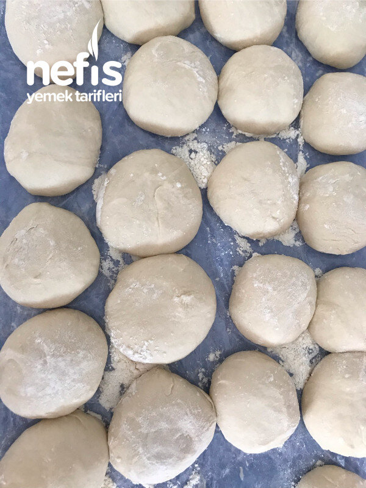

🍽️ 12-14 kişilik⏱️ Hazırlık: 3 sa🔥 Pişirme: 1 sa 30 dk🏷️ Hamur İşi Tarifleri
Malzemeler
- 12 bardak un
- 1 litre su
- 2 kaşık tuz
- Lavaşları açmak için 2 bardak un
- Bütün bir tavuk
- 2-3 diş sarımsak
- Tuz
Hazırlanışı
- Tavuk büyük bir tencereye konur üzerini 2-3 cm geçecek kadar su ve 2-3 diş sarımsak konularak kaynatılır pişmesine yakın tuz ilave edilir
- Pişen tavuk tencereden çıkarılıp etleri kemiklerinden ayrılır etler küçük parçalara ayrılır
- Lavaşlar hazırlanırken; un bir kaba konur ortası havuz gibi açılır 2 kaşık tuz konur 1 litre su azar azar ilave edilerek kulak memesi kıvamında lavaş hamuru hazırlanır.
- Hazırlanan hamur bezelere ayrılır biraz dinlendirildikten sonra oklava yardımıyla 1- 1, 5 cm kalınlığında (Börek yufkası kalınlığında) açılır. Uygun büyüklükteki tava veya saçta iki tarafı da pişirilir.
- Pişen lavaşlar ikiye veya dörde katlanır Tavuk suyu tekrar kaynamaya konur
- Soğuyan lavaşlar kaynamakta olan tavuk suyuna atılıp bekletmeden çıkarılır açılarak tepsiye konur
- Bütün lavaşlar üst üste tavuk suyuna batırıldıktan sonra bıçak yardımıyla dörde bölünür tepsinin içindeki lavaşların etrafına ısıtılan tavuk etleri dizilir.
- Servis yaparken kişi sayısı kadar kaseye sıcak tavuk suyu konur. Lavaşlar ve tavuk parçaları tabaklara pay edilir. Lavaştan bir parça koparılıp tavuk ile birlikte sıcak tavuk suyuna batırılıp afiyetle yenir. Afiyet olsun😊.